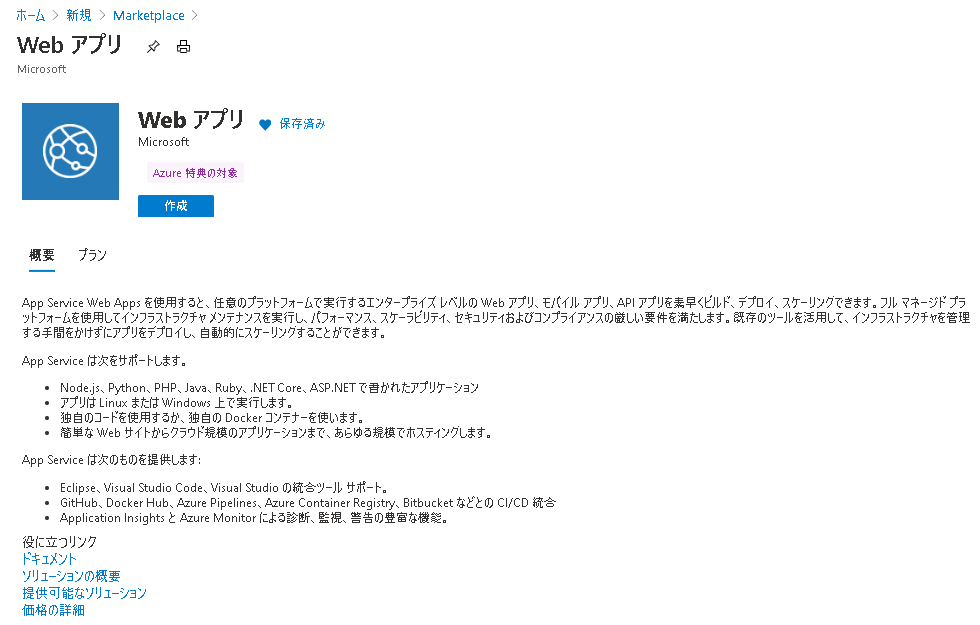

こんにちは、Japan Developer Support Core チームです。
今日は、色々な方法でMicrosoft Azure (以降、Azure) のAzure App Service (以降、AppService) にWebアプリ (以降、WebApp) をデプロイして楽しんでみましょう。
メジャーどころをピックアップしてみましたよ。
選り取り見取りです。
- Azure ポータルからデプロイする
- ARM テンプレートを使ってデプロイする
- 予めビルドしておいたパッケージを PowerShell から手動でデプロイする
- Visual Studio からビルドした WebApp を直接 App Service としてデプロイする
- DevOps でビルドしたものを Azure Pipeline 経由でデプロイする
前提条件
- アクティブなサブスクリプションが含まれる Azure アカウントをご用意ください。無料でアカウントを作成できます。
- このブログ記事では、Windows 上の App Service に ASP.NET Core Web アプリケーションをデプロイします。
1. Azure ポータルからデプロイする
Visua Studio がいらない世界です。
検証の時など、とにかく何か AppService が動いてくれればいい時は、Azureポータルからササッと発行してしまいましょう。
(1) Azure ポータル に Azure アカウントでサインインします。ホーム画面が表示されるので、[リソースの作成]をクリックします。[Marketplaceを検索]内に “Web アプリ” や ”webapp”、”appservice” 等のキーワードを入力して検索を行い、下図のタイルを選んでクリックします。
(2) 下図のページに遷移するので、[作成] ボタンをクリックします。

(3) 表示されるウィザードにしたがって、各種 App Service 用の設定を行います。
(4) 一通りの設定が終わると下図のページが表示されるので、[作成] ボタンをクリックします。
(5) 作成した App Service には、Azure 既定のソースコードをベースにビルドされた WebApp が展開されて、App Service としてデプロイが行われます。
(6) デプロイが完了すると、下図の画面が表示されます。[リソースに移動] をクリックして、デプロイされたばかりの App Service を見てみましょう。
(7) デプロイされたばかりの App Service の各種設定を確認できます。[URL] に表示されている URL から、App Service としてデプロイされた WebApp のホームページにアクセスすることができますよ。
デプロイされたばかりでAppServiceがまだ完全に起動していない場合は下図のようなページが表示されてしまいますが、コーヒーを一杯入れている間に大抵は起動されます。さて、腰を上げてキッチンへ行きましょう。
(8) コーヒーを入れて戻ってきたら、もう一度同じURLにアクセスしてみましょう。はい、出来上がりです。
2. ARMテンプレートを使ってデプロイする
Azure Resource Manager (以降、ARM) テンプレートをいじれば、App Service を手っ取り早く量産できます。
検証用に AppService を沢山デプロイしたい時に便利ですよ。
先ずは ARM テンプレートを作りましょう。
(1) Azure ポータルに Azure アカウントでサインインします。ホーム画面が表示されるので、[リソース、サービス、ドキュメントの検索]内に“テンプレート”と入力して検索を行い、下図[テンプレート]を選んでクリックし、[テンプレートの作成]をクリックします。
(2) 表示されるウィザードに従って、各種 App Service 用のテンプレート設定を行います。
(3) 下図 [ARM テンプレート]で、いよいよ ARM テンプレート本体を実装することになります。簡単です、github から素敵な ARM テンプレートを探してきて、コピー&ペーストしてしまいましょう。以下は、季節を問わずシンプルで使いまわしの良い、お勧めの ARM テンプレートです。
azure-quickstart-templates/101-webapp-basic-windows/azuredeploy.json
https://github.com/Azure/azure-quickstart-templates/blob/master/101-webapp-basic-windows/azuredeploy.json
ペーストが終わったら[OK]ボタンをクリックして、下図[テンプレートの追加]で[追加]するのも忘れずに。
(4) テンプレートが追加できました。それでは、このテンプレートを使って App Service をデプロイしてみましょう。先ほど追加したテンプレートをクリックして開きます。 \
(5) [展開] ボタンをクリックします。
(6) 下図 [カスタムデプロイ]が開くのでお好みにあわせて入力し、[購入]をクリックすればデプロイ完了です。さあ、二杯目のコーヒーを入れに行きましょう。
3. 予めビルドしておいたパッケージを手動で発行する
ビルド済みの WebApp のパッケージだけ手に入ったけど、さてどうしよう・・・ということ、季節の変わり目にはよくありますよね。そんな時のために、ZIP や WAR ファイル形式の WebApp のパッケージをそのまま App Service へデプロイする方法が用意されていますよ。
ZIP または WAR ファイルを使用した Azure App Service へのアプリのデプロイ
https://docs.microsoft.com/ja-jp/azure/app-service/deploy-zip
ZIP形式のパッケージの場合だけでも、様々な方法がありますよ。
一度試してみると楽しいのは、Kuduツールの力を拝借する方法です。
ZIP ファイルのデプロイ
https://docs.microsoft.com/ja-jp/azure/app-service/deploy-zip#deploy-zip-file
ここでは、先にご紹介した「1. Azure ポータルからデプロイする」でデプロイした下記 URL の App Service を使いまわしてみましょう。
(1) デプロイ先の App Service に用意されている Kudu ツールの ZipDeployUI を開きます。といっても難しいことは何もなくて、「.azurewebsites.net」のすぐ前に「.scm」を挿入し、末尾に「/ZipDeployUI」を追加したURLにアクセスするだけです。
ZipDeployUI の URL 形式 : https://<app_name>.scm.azurewebsites.net/ZipDeployUI
例 : https://azureportaldefaultproject-webapp1.scm.azurewebsites.net/ZipDeployUI
(2) WebアプリがパッケージングされているZIP ファイルをドラッグして ZipDeployUI 画面にホバーさせると、「Drop here to deploy your zip」と表示されるエリアがあるので、そこでドロップします。
(3) 暫く待ち、ZipDeployUI のインジケーターが 100% になって消えたら、デプロイ完了です。
他にも ZIP ファイル形式の方法を各種取り揃えております、お試しあれ。
Azure CLI を使って ZIP ファイルを展開する
<https://docs.microsoft.com/ja-jp/azure/app-service/deploy-zip#deploy-zip-file-with-azure-cli>REST API を使って ZIP ファイルを展開する
<https://docs.microsoft.com/ja-jp/azure/app-service/deploy-zip#deploy-zip-file-with-rest-apis>cURL を使用する
<https://docs.microsoft.com/ja-jp/azure/app-service/deploy-zip#with-curl>PowerShell の場合
<https://docs.microsoft.com/ja-jp/azure/app-service/deploy-zip#with-powershell>
WARファイル形式の場合も、各種方法を取り揃えておりますよ。
WAR ファイルの展開
<https://docs.microsoft.com/ja-jp/azure/app-service/deploy-zip#deploy-war-file>
4. Visual Studio からビルドした WebApp を直接 App Service としてデプロイする
はい、ようやく登場しました Visual Studio です。
Visual Studio使いの皆さんならこちらがポピュラーですよね。
竹を割ったようにバッサリ説明すると、手順としては以下の2ステップです。
(1) Visual Studioで WebApp を作ります。
(2) Visual Studioから [プロジェクトの発行] を選択し、作成した WebApp を公開ウィザードで App Service としてデプロイします。
画像付きで、懇切丁寧に詳しく手順を説明してくれている Docs サイトが公開されていますのでご紹介します。
クイック スタート:Azure に ASP.NET Core Web アプリを作成する
<https://docs.microsoft.com/ja-jp/azure/app-service/quickstart-dotnetcore?pivots=platform-windows>
5. DevOps でビルドしたものを Azure Pipelines 経由で発行する
はい、お待たせしました Azure DevOps (以降、DevOps) です。
これもザックリ雑に説明すると、手順としては以下の 4 ステップです。
(1) DevOps にプロジェクトを作成します。
(2) Visual Studio で WebApp を作成します。
(3) Visual Studio から DevOps のリポジトリ (以降、Repos) に対して、(1) で作成した WebApp のソースコードを push します。
(4) Visual Studio からプロジェクトの [概要]を選択し、[公開] タブの [継続的デリバリー] から App Service に WebApp をデプロイします。
流石に雑過ぎるので、もう少し細かく各ステップを見ていきましょう。
(1)-1.個人用の Microsoft アカウント (以降、MSA) を一つ用意します。
新しい Microsoft アカウントを作成する方法
<https://support.microsoft.com/ja-jp/help/4026324/microsoft-account-how-to-create>
(1)-2. 用意した MSA を使って、以下の URL から DevOps にサインインしましょう。
(1)-3. 先ず DevOps 上に新しい組織を作成しましょう。DevOps のブレードから [New organization] を選択し、[Get started with Azure DevOps] と表示されたら [Continue] ボタンをクリックします。お好みの組織名 (下記例では「tomoshiOrg」) とエリアを設定したら、[Continue] ボタンをクリックします。
(1)-4.新しく組織を作成すると、新しくプロジェクトを作成するように求められます。お好みのプロジェクト名 (下記例では「VSCiCdProject-WebApp5-prj」) を設定したら、[Create project] ボタンをクリックします。
DevOps 上に新しい組織と、新しいプロジェクトが作成できました。
プロジェクトのブレードから [Repos] を選択すると、コードを追加してねと言わんばかりの下図の画面が開きます。早速、コードをこのReposに追加 (プッシュ) していくことにしましょう。
(2)-1. Visual Studio で新しい ASP.NET Core Web アプリケーションのプロジェクト (下記例では「VSCiCdProject-WebApp5」) を作成し、ビルドを通しましょう。
(3)-1. ソリューションエクスプローラーからプロジェクトを選択し、右クリックして表示されるポップアップから [概要] をクリックします。表示された画面から [公開] タブを選択し、[継続的デリバリー] の [設定] をクリックします。
(3)-2.下図 [Azure Pipelines のセットアップ] 画面が表示されますが、[このソリューションは Azure DevOps または Github でソース管理する必要があります。今すぐソース管理に追加します。] と警告されますので、[今すぐソース管理に追加します。] リンクをクリックします。
(3)-3. [チームエクスプローラー] の下図 [コードをバックアップし、共有します。Git サービスにコードを公開します]画面が表示されるので、[Azure DevOps Services へプッシュ] から [Git リポジトリを公開] をクリックします。
(3)-4.下 [Azure DevOps Services へプッシュ] が展開されますので、ソースコードのプッシュ先となる DevOps の組織・プロジェクト・リポジトリの情報を設定したら、[リポジトリの公開] をクリックします。
(3)-5.ソースコードのプッシュが完了すると、下図 [(Visual Studioのプロジェクト名)がプッシュされました。Web でご確認ください。] と青い文字で表示されますので、早速クリックして確認してみましょう。
プラウザ上で、先ほどは空っぽだった DevOps の Repos が開き、ソースコードがギッシリ追加 (プッシュ) されていることを確認できますね。
それでは、Visual Studio に戻りましょう。
(4)-1. ソリューションエクスプローラーからもう一度プロジェクトを選択し、右クリックして表示されるポップアップから [概要] をクリックします。表示された画面から [公開] タブを選択し、[継続的デリバリー] の [設定] をクリックします。
(4)-2. 下図 [Azure Pipelines のセットアップ] 画面が表示されるので、使用するブランチやサブスクリプションに間違いがないか確認しましょう。そして、デプロイ先となる App Service を選択するコンボボックスの右側に、小さく表示されている [編集…] をクリックします。
(4)-3. 下図 [App Service の編集] ポップアップ画面が開くので、デプロイ先となる App Service の各種設定を行ったら、[OK] をクリックします。
(4)-4. 下図 [Azure Pipelines のセットアップ] 画面に戻ったら、[OK] をクリックします。
(4)-5. それでは DevOps に戻って、プロジェクトのブレードから [Pipelines] の [Pipeines] を選択してみましょう。下図 [Recently run pipeines] から、CI プロセスにあたる Build パイプラインが追加されていることを確認できます。緑色のチェックマークが表示されているので、この Build パイプラインは成功しているようですね。
(4)-6. 続いて、プロジェクトのブレードから [Pipelines] の [Releases] を選択してみましょう。下図のように、CIプロセスにあたる Release パイプラインが追加されていることを確認できます。ここでも緑色のチェックマークが表示されているので、この Release パイプラインは成功しているようですね。
Azure ポータルからも、DevOps の Release パイプライン経由でデプロイされた AppService を確認できますよ。これで、Visual Studio から DevOps にプッシュしたソースコードを、DevOps の Build パイプラインがビルドを行い、そして DevOps の Release パイプラインが App Service へデプロイを行うところまで達成できました・・・おめでとうございます！
三杯目のコーヒーを入れなおしている間に、デプロイ完了した App Service が完全に起動したようです。ようこそ！
今回は、バラエティー豊かな App Service のデプロイ方法について、そのほんの一部をご紹介しました。次回は、DevOps を中心として他サービスと連携しながら App Service をデプロイしていく方法をご紹介したいと思っています。どうぞよろしくお願いします！
本ブログの内容は弊社の公式見解として保証されるものではなく、開発・運用時の参考情報としてご活用いただくことを目的としています。もし公式な見解が必要な場合は、弊社ドキュメント (https://docs.microsoft.com や https://support.microsoft.com) をご参照いただくか、もしくは私共サポートまでお問い合わせください。